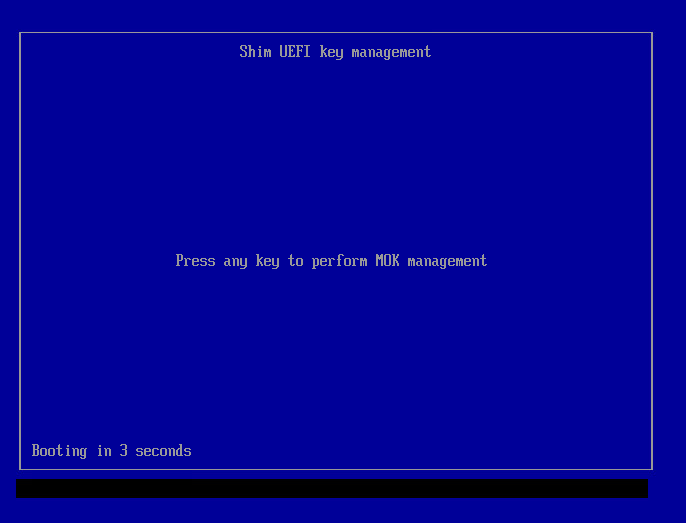
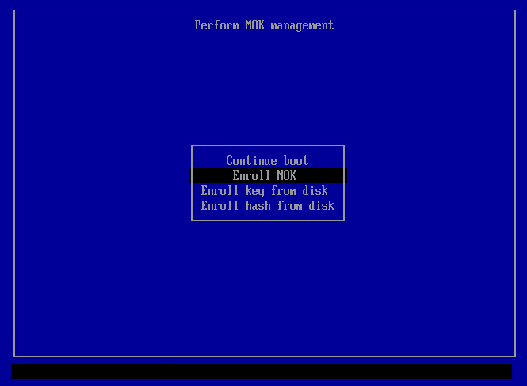
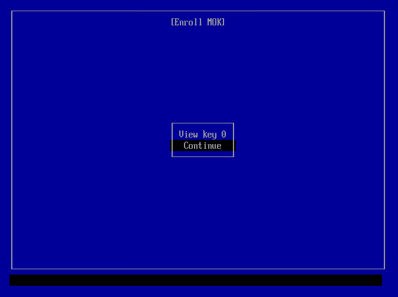
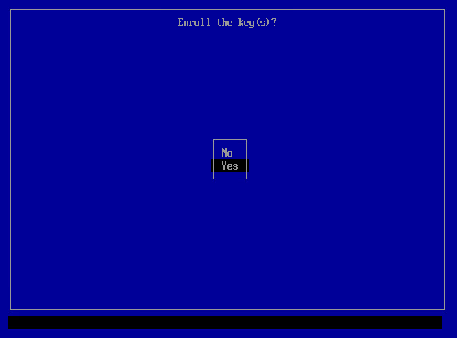
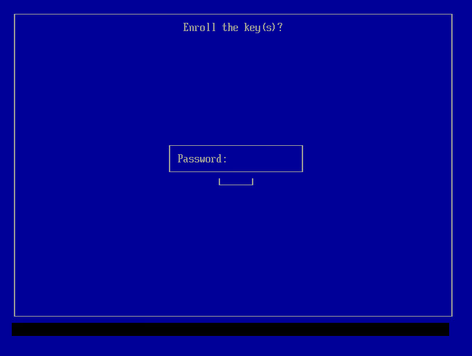
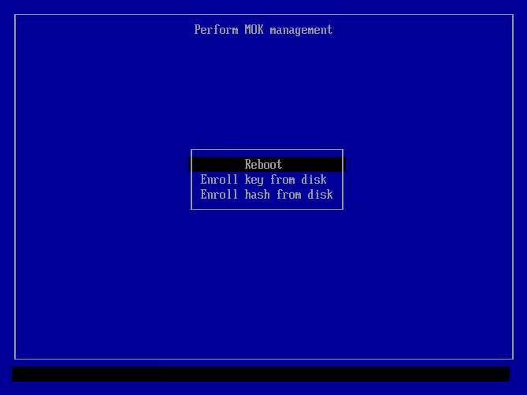

We believe security software like Kicksecure needs to remain Open Source and independent. Would you help sustain and grow the project? Learn more about our 14 year success story and maybe DONATE!

Information on Secure Boot and DKMS Signing Key (MOK Key) Enrollment to ensure kernel modules can be loaded on systems with Secure Boot enabled.
Introduction
Secure Boot is a feature designed to help protect your computer by allowing only trusted software to run during startup. It ensures that the system boots with software that hasn't been tampered with. However, in practice, Secure Boot has been criticized for acting as an anti-competitive tool by Microsoft, as it can prevent users from easily switching from Windows to alternative operating systems such as Linux. In practice, until a full Verified Boot (and perhaps Sovereign Boot) gets implemented by a Freedom Software Linux desktop distribution, the security advantage is marginal. Technical details can be found on Secure Boot (developers). User freedom restrictions are documented in chapter "restricted boot".
Kicksecure Secure Boot Compatibility
Platform specific.
- Kicksecure: Kicksecure is compatible with computer hardware provider default (Microsoft) provided keys. Disabling Secure Boot is optional. However, if the user keeps Secure Boot enabled, DKMS key enrollment is recommended, which is documented below.
- Kicksecure for Qubes: See Qubes Specific.
Rationale for DKMS Signing Key Enrollment
Without a DKMS Signing Key Enrollment, the following functionality will be broken:
- tirdad - CPU Information Leak Protection (TCP ISN) is implemented through a custom kernel module.
- VirtualBox host operating system software.
- Any other kernel modules not acquired from
packages.debian.org(signed by Debian).
This is because, when Secure Boot is enabled, custom (non-mainline in Linux) kernel modules are rejected by the Linux kernel.
Symptoms
module verification failed: signature and/or required key missing - tainting kernel
This message appears in Linux systems when you load a kernel module that is either unsigned or signed with a key the running kernel doesn't recognize. It usually looks like this:
tirdad: module verification failed: signature and/or required key missing - tainting kernelRecommended user action:
Choose either option A or B.
- A No action: No user action is necessarily required. Or
- B Secure Boot compliance: Enable Secure Boot and Secure Boot DKMS Signing Key Enrollment.
What is happening:
The kernel loads the module normally and then taints itself, marking the state as potentially unsafe. This is mainly for diagnostic and support purposes and may matter in enterprise contexts where running a tainted kernel (unsigned kernel modules) is prohibited.
Note that the package that shipped the kernel module was probably
signed, but the module as a whole isn't signed with a separate key. This
is not an issue for Open Source modules that are compiled using DKMS at
build time such as tirdad.
Effects of this message:
- Only a warning: Not an error. Most of the time, the module still loads and works as intended. The message is a warning indicating your security policy was bypassed.
- Tainted Kernel: The kernel logs the event, and the running kernel is marked as "tainted." Some modules (especially modules not coming together with the Linux kernel) cause this tainting even if they work normally.
Relation to Secure Boot:
This message can only happen if Secure Boot is disabled. If Secure Boot were enabled, the kernel module load would be rejected.
systemd-modules-load - Failed to insert module module name - Key was rejected by service
This message appears when a kernel module fails to load because its signature could not be verified under Secure Boot policies. Examples:
systemd-modules-load[PID]: Failed to insert module '[module name]': Key was rejected by servicesystemd-modules-load[795]: Failed to insert module 'tirdad': Key was rejected by serviceRecommended user action:
Choose either option A or B.
- A Secure Boot non-compliance: Disable Secure Boot; or
- B Secure Boot compliance: Secure Boot DKMS Signing Key Enrollment
What is happening:
With Secure Boot enabled, the kernel enforces strict module signing policies. The module in question is likely unsigned, signed with an untrusted key, or otherwise incompatible with the Secure Boot trust chain. As a result, the kernel refuses to load it.
Effects of this message:
- Module not loaded: The affected module will not function, potentially disabling related functionality (e.g., device drivers or security modules).
- Security: The recommended kernel module
tirdadwill fail to load. Also other potentially wanted kernel modules not included with the Linux kernel will fail to load.
Relation to Secure Boot:
This message only occurs when Secure Boot is enabled. Secure Boot ensures that only signed and trusted kernel modules are allowed to run. If a module's key is not enrolled, the kernel will reject it.
Secure Boot DKMS Signing Key Enrollment
- context: Secure Boot, Introduction
- purpose: Rationale for DKMS Signing Key Enrollment
1
To import the MOK certificate, make sure mokutil is
installed.
It is installed by default in Kicksecure.
Install package(s) mokutil following these
instructions:
1 Platform specific notice.
- Kicksecure: No special notice.
- Kicksecure-Qubes: In Template.
2 Update the package lists and upgrade the system.
sudo apt update && sudo apt full-upgrade
3
Install the mokutil package(s).
Using apt command line --no-install-recommends option is in
most cases optional.
sudo apt install --no-install-recommends mokutil
4 Platform specific notice.
- Kicksecure: No special notice.
- Kicksecure-Qubes: Shut down Template and restart App Qubes based on it as per Qubes Template Modification.
5 Done.
The procedure of installing package(s) mokutil is
complete.
2 Check if Secure Boot is enabled:
sudo mokutil --sb-state
Expected output (Secure Boot is enabled):
SecureBoot enabledExpected output (Secure Boot is disabled):
SecureBoot disabledWhat this means:
- Secure Boot enabled means the system will only load trusted kernel modules. You will likely need to enroll the DKMS signing key for additional kernel modules.
- Secure Boot disabled means no key enrollment is needed, and you can skip the remaining steps in this chapter.
Recommended user action:
- A
If Secure Boot is disabled:
- 1 If you want to enable it, see Enable Secure Boot.
- 2 If you do not want to enable it, you are done. No further steps from this chapter are required.
- B
If Secure Boot is enabled:
- 1 Proceed with the steps below.
3
If user-sysmaint-split is installed, boot into PERSISTENT Mode | SYSMAINT Session | system maintenance tasks.
Otherwise, open the Start Menu → System Tools
→ System Maintenance Panel.
4
Click the Enroll Secure Boot MOK button.
5
When asked "Set up and start enrolling a MOK now?", type
yes and press Enter.
6 Password entry.
You'll be prompted to create a password. Enter it twice.
7 Reboot the computer.
sudo reboot
8 MOK Manager EFI interface.
At boot, you'll see the MOK Manager EFI interface:

9 Press any key to enter it, then select "Enroll MOK":

10 Then select "Continue":

11 Confirm with "Yes" when prompted:

12 After this, enter the password you set up in step 6:

13 At this point, you are done. Select "Reboot" and the computer will reboot, trusting the key for your modules:

14 After reboot, you can inspect the MOK certificates with the following command:
sudo mokutil --list-enrolled | grep DKMS
Expected output:
Subject: CN=DKMS module signing key15 To check the signature on a built DKMS module that is installed on a system:
sudo modinfo dkms_test | grep ^signer
signer: DKMS module signing key16 Done.
The module can now be loaded without issues.
Credits: Based on Dell dkms Secure Boot documentation
Enable or Disable Secure Boot
Disable Secure Boot
Choose an option.
Disable Secure Boot using update-secureboot-policy
Secure Boot can be disabled using
update-secureboot-policy.
This tool is available only for Debian-based distributions, such as Kicksecure and Whonix. For other Linux distributions, see the alternative option.
1 Sysmaint Notice

- A
If using
user-sysmaint-split: The user must boot into the sysmaint session. For details and instructions on how to do so, see user-sysmaint-split. - B If using unrestricted admin mode: This sysmaint notice does not apply. Continue with the steps below.
2 Choose one of these methods:
- A) Terminal-based graphical user interface: sudo update-secureboot-policy
- B) Command-line interface: sudo update-secureboot-policy --disable
3 Reboot your system.
4 Done.
Disable Secure Boot in BIOS/UEFI
Alternatively, Secure Boot can be disabled using the firmware setup (BIOS/UEFI).
1 Restart your computer and enter the BIOS/UEFI settings.
2 Locate the Secure Boot option and disable it.
3 Save changes and exit.
4 Done.
Enable Secure Boot
If the user wishes to use Secure Boot, it must be enabled using the firmware setup (BIOS/UEFI).
1 Restart your computer and enter the BIOS/UEFI settings.
2 Locate the Secure Boot option and enable it.
3 Save changes and exit.
4
Enable Secure Boot using update-secureboot-policy.
This may or may not be needed. Most likely not needed, unless Secure
Boot has been previously disabled using
update-secureboot-policy. As per the instructions
below.
5 Sysmaint Notice

- A
If using
user-sysmaint-split: The user must boot into the sysmaint session. For details and instructions on how to do so, see user-sysmaint-split. - B If using unrestricted admin mode: This sysmaint notice does not apply. Continue with the steps below.
6 Choose one of these methods:
- A Terminal-based graphical user interface: sudo update-secureboot-policy
- B Command-line interface: sudo update-secureboot-policy --enable
7 Reboot your system.
8 Done.
Errors
EFI variables are not supported on this system
If you see the following error message:
EFI variables are not supported on this systemIn this case, EFI is not enabled, which by extension means that Secure Boot is not enabled either. Therefore, it is unnecessary for the DKMS MOK key to be imported. No further user action is required.
Qubes Specific
- Qubes feature request: enable Linux kernel gpg verification in grub and/or enable EFI Secure Boot for Qubes / Xen guests
Development
Other Projects on Secure Boot
Tools
Coming up in the next version.
/usr/bin/secure-boot-enabled-check
/usr/sbin/shim-signed-mok-setup
/usr/sbin/shim-enroll-mok
See Also
Categories: Documentation